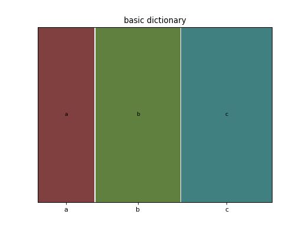
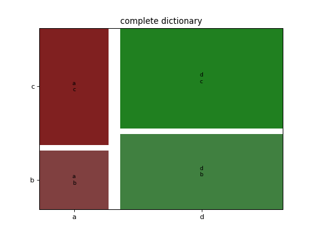
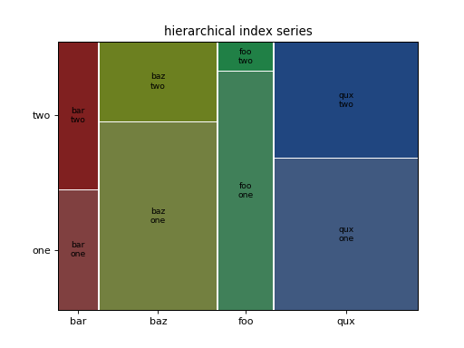
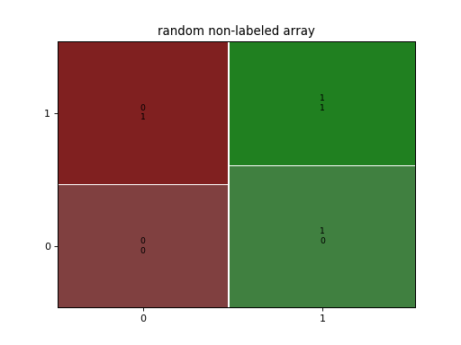
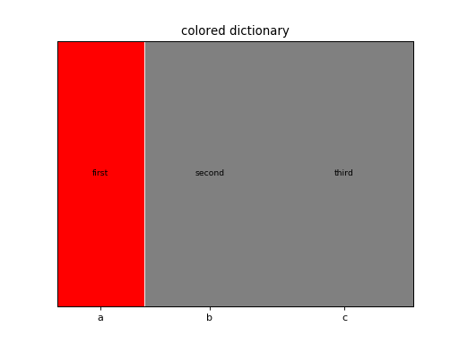
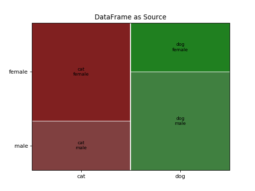

statsmodels.graphics.mosaicplot.mosaic¶
-
statsmodels.graphics.mosaicplot.mosaic(data, index=None, ax=None, horizontal=True, gap=0.005, properties=<function <lambda>>, labelizer=None, title='', statistic=False, axes_label=True, label_rotation=0.0)[source]¶ Create a mosaic plot from a contingency table.
It allows to visualize multivariate categorical data in a rigorous and informative way.
- Parameters
- datadict, pandas.Series, np.ndarray, pandas.DataFrame
The contingency table that contains the data. Each category should contain a non-negative number with a tuple as index. It expects that all the combination of keys to be representes; if that is not true, will automatically consider the missing values as 0. The order of the keys will be the same as the one of insertion. If a dict of a Series (or any other dict like object) is used, it will take the keys as labels. If a np.ndarray is provided, it will generate a simple numerical labels.
- index: list, optional
Gives the preferred order for the category ordering. If not specified will default to the given order. It doesn’t support named indexes for hierarchical Series. If a DataFrame is provided, it expects a list with the name of the columns.
- axmatplotlib.Axes, optional
The graph where display the mosaic. If not given, will create a new figure
- horizontalbool, optional (default True)
The starting direction of the split (by default along the horizontal axis)
- gapfloat or array of floats
The list of gaps to be applied on each subdivision. If the lenght of the given array is less of the number of subcategories (or if it’s a single number) it will extend it with exponentially decreasing gaps
- labelizerfunction (key) -> string, optional
A function that generate the text to display at the center of each tile base on the key of that tile
- propertiesfunction (key) -> dict, optional
A function that for each tile in the mosaic take the key of the tile and returns the dictionary of properties of the generated Rectangle, like color, hatch or similar. A default properties set will be provided fot the keys whose color has not been defined, and will use color variation to help visually separates the various categories. It should return None to indicate that it should use the default property for the tile. A dictionary of the properties for each key can be passed, and it will be internally converted to the correct function
- statistic: bool, optional (default False)
if true will use a crude statistical model to give colors to the plot. If the tile has a containt that is more than 2 standard deviation from the expected value under independence hipotesys, it will go from green to red (for positive deviations, blue otherwise) and will acquire an hatching when crosses the 3 sigma.
- title: string, optional
The title of the axis
- axes_label: boolean, optional
Show the name of each value of each category on the axis (default) or hide them.
- label_rotation: float or list of float
the rotation of the axis label (if present). If a list is given each axis can have a different rotation
- Returns
- figmatplotlib.Figure
The generate figure
- rectsdict
A dictionary that has the same keys of the original dataset, that holds a reference to the coordinates of the tile and the Rectangle that represent it
References
- A Brief History of the Mosaic Display
Michael Friendly, York University, Psychology Department Journal of Computational and Graphical Statistics, 2001
- Mosaic Displays for Loglinear Models.
Michael Friendly, York University, Psychology Department Proceedings of the Statistical Graphics Section, 1992, 61-68.
- Mosaic displays for multi-way contingecy tables.
Michael Friendly, York University, Psychology Department Journal of the american statistical association March 1994, Vol. 89, No. 425, Theory and Methods
Examples
>>> import numpy as np >>> import pandas as pd >>> import matplotlib.pyplot as plt >>> from statsmodels.graphics.mosaicplot import mosaic
The most simple use case is to take a dictionary and plot the result
>>> data = {'a': 10, 'b': 15, 'c': 16} >>> mosaic(data, title='basic dictionary') >>> plt.show()
A more useful example is given by a dictionary with multiple indices. In this case we use a wider gap to a better visual separation of the resulting plot
>>> data = {('a', 'b'): 1, ('a', 'c'): 2, ('d', 'b'): 3, ('d', 'c'): 4} >>> mosaic(data, gap=0.05, title='complete dictionary') >>> plt.show()
The same data can be given as a simple or hierarchical indexed Series
>>> rand = np.random.random >>> from itertools import product >>> tuples = list(product(['bar', 'baz', 'foo', 'qux'], ['one', 'two'])) >>> index = pd.MultiIndex.from_tuples(tuples, names=['first', 'second']) >>> data = pd.Series(rand(8), index=index) >>> mosaic(data, title='hierarchical index series') >>> plt.show()
The third accepted data structureis the np array, for which a very simple index will be created.
>>> rand = np.random.random >>> data = 1+rand((2,2)) >>> mosaic(data, title='random non-labeled array') >>> plt.show()
If you need to modify the labeling and the coloring you can give a function tocreate the labels and one with the graphical properties starting from the key tuple
>>> data = {'a': 10, 'b': 15, 'c': 16} >>> props = lambda key: {'color': 'r' if 'a' in key else 'gray'} >>> labelizer = lambda k: {('a',): 'first', ('b',): 'second', ... ('c',): 'third'}[k] >>> mosaic(data, title='colored dictionary', properties=props, ... labelizer=labelizer) >>> plt.show()
Using a DataFrame as source, specifying the name of the columns of interest
>>> gender = ['male', 'male', 'male', 'female', 'female', 'female'] >>> pet = ['cat', 'dog', 'dog', 'cat', 'dog', 'cat'] >>> data = pd.DataFrame({'gender': gender, 'pet': pet}) >>> mosaic(data, ['pet', 'gender'], title='DataFrame as Source') >>> plt.show()
(Source code, png, hires.png, pdf)

{kind=link}
{kind=link}
{kind=link}
{kind=link}
{kind=link}
{kind=link}
{kind=link}
{kind=link}
{kind=link}
{kind=link}
{kind=link}
{kind=link}